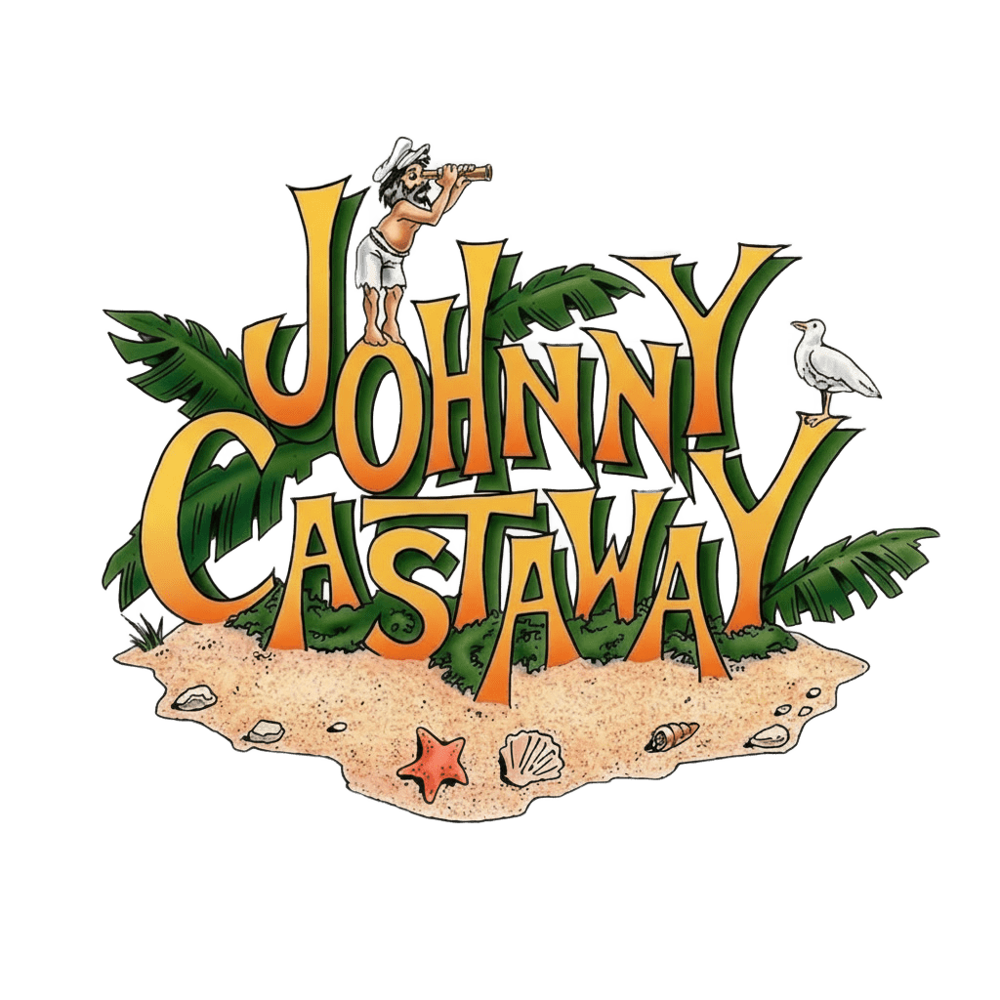

Works with GitHub
Works with GitHub
Preservation · Tribute · Gratitude
Johnny Castaway
Keeping Johnny Castaway alive in the days of Windows 11 and Linux.
This project exists to preserve their work with respect, keeping the character and experience accessible to new generations of computers.
The story
Johnny Castaway is the castaway at the center of Screen Antics, created in 1992 for Microsoft Windows 3.1 by Sierra On-Line / Dynamix and developed at Jeff Tunnell Productions. Instead of repeating a simple animation, the screensaver presented small scenes from Johnny's daily life on his island.
Those scenes gradually formed a story. Visual jokes, routines, sounds and unexpected events made Johnny feel unusually alive for a screensaver, while the changing sequence of events kept the experience surprising.
Preservation project
ScreenAntics — Johnny Castaway is an independent, non-profit fan preservation project. Its purpose is to conserve the original experience and make only the compatibility changes needed for Johnny to continue running on current systems.
The Original mode remains the reference. Modern options such as adaptive full screen and updated rendering are optional presentation layers and are not intended to replace the original scenes, characters, sounds, timing or personality.
Original creators
- Original: Sierra On-Line / Dynamix
- Development: Jeff Tunnell Productions
- Character design: Shawn Bird
- Lead Designer: Chris Cole
- Art direction: Brian Hahn
- Animation: Sherry Wheeler
Why preserve it?
Software can disappear when operating systems, display formats and hardware change. This project is a personal effort to prevent a memorable piece of software culture from being lost, while preserving the character that made Johnny Castaway special.
Preservation by Charlie_030183 · Project started in 2026.
Languages used: Go, PowerShell, Shell Script, YAML and Pascal Script.